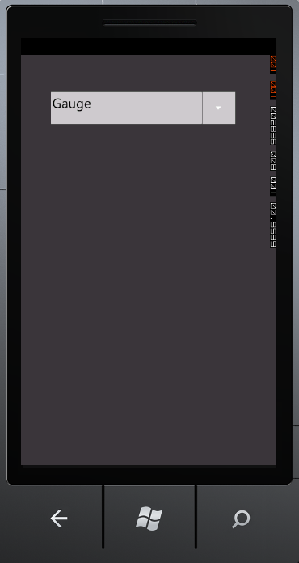
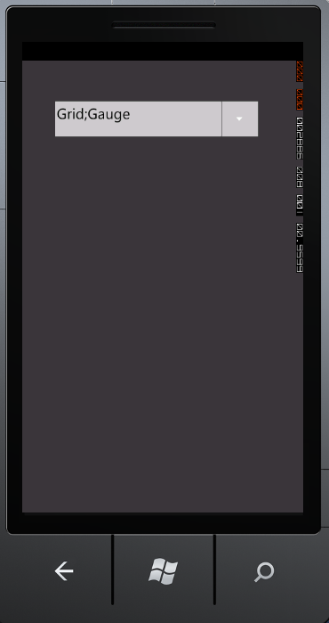

AutoComplete supports two kinds of Selection Mode namely Single and Multiple. You can select the Mode using the SelectionMode property.
When the SelectionMode property is set to Single, only one item can be selected at a time. The following image illustrates the Single selection mode.

Figure 17: SelectionMode-Single
When the SelectionMode is set to Multiple, multiple items can be selected. Use the SeparatorChar property to separate the selected items. By default the SeparatorChar is set to semicolon (;). Once an item is selected the Separatorchar has to be entered in the text box to select the next item. The following image illustrates the Multiple selection mode.

Figure 18: SelectionMode-Multiple
Adding Selection Support to an Application
The Selectionmode property is used to attain these functionalities by setting its value as Single or Multiple. By default the value is set to Single. The following code illustrates how to set the SelectionMode property:
|
[XAML] <syncfusion:AutoComplete x:Name="AutoComplete1" SelectionMode="Multiple"/> |
|
[C#] AutoComplete autoComplete1 = new AutoComplete(); this.autoComplete1.SelectionMode = SelectionMode.Multiple; |
Tables for property, and Event
Property
Table 5: Property Table for Multiple Selection
|
Property |
Description |
Type |
Data Type |
Reference links |
|
SelectionMode |
Gets or sets the SelectionMode of the AutoComplete. |
DependencyProperty |
SelectionMode(Single) |
NA |
Events
Table 6: Event Table for Multiple Selection
|
Event |
Description |
Arguments |
Type |
Reference links |
|
SelectionModeChanged |
When the SelectionMode property value is changed, this event will be triggered. This cannot be cancelled. |
DependencyObject, DependencyPropertyChangedEventArgs |
DependencyPropertyChangedCallBack |
NA |
Sample Link
To access a Basic Core Features demo:
1. Open the Syncfusion Dashboard.
2. Click the Windows Phones drop-down list and select Explore Samples.
3. Navigate to WindowsPhoneSampleBrowser-> Tools -> AutoComplete Demo